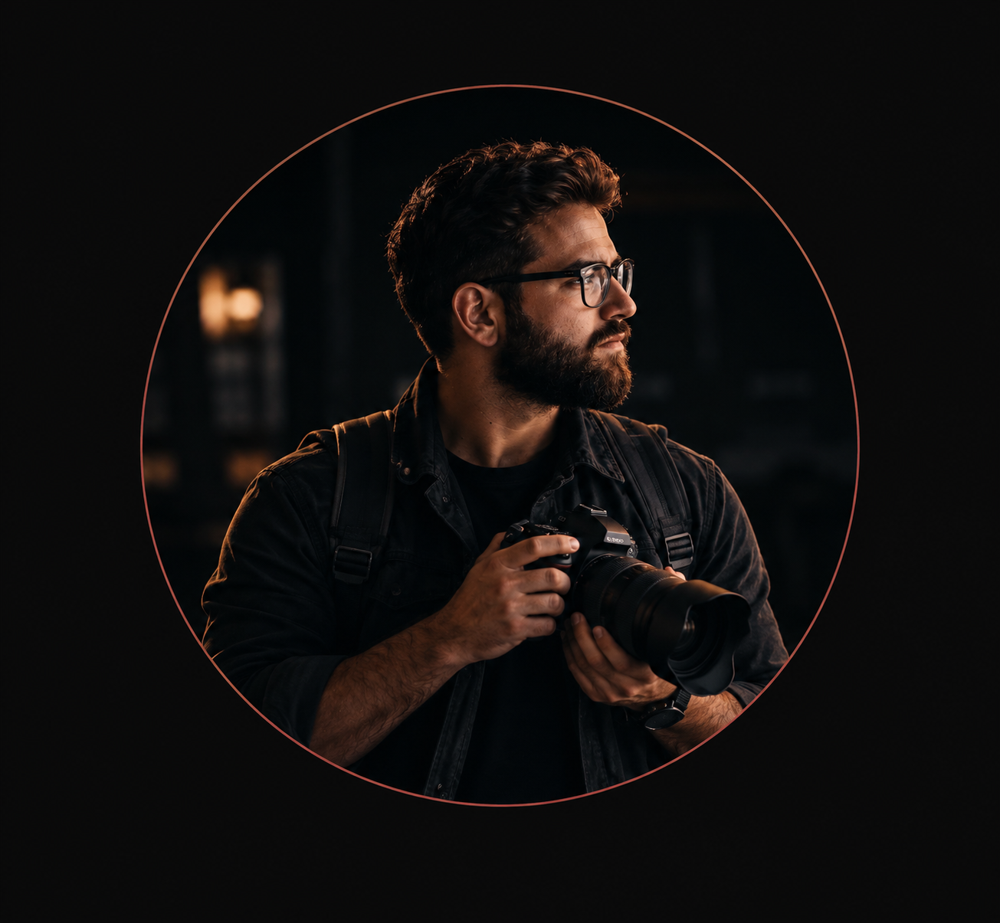

I photograph very instinctively. I see how it is taken like that. i do not
follow certain styles, philosophies or teachers.
I’m Jackson, a photographer driven by a passion for turning real moments into lasting visual stories.For me, photography is more than simply taking pictures.it’s about seeing the details, emotions, and atmosphere that make every moment unique.
With over 10 years of experience behind the lens, I’ve developed a natural and instinctive approach to photography. I don’t believe in forcing every moment into a particular style. Instead, I focus on capturing things as they happen, creating images that feel authentic, personal, and timeless.
From portraits and creative projects to events and everyday moments, my goal is simple: to create photographs that make you feel something every time you look at them.
Years of Experience
Projects Completed
Client Satisfaction
